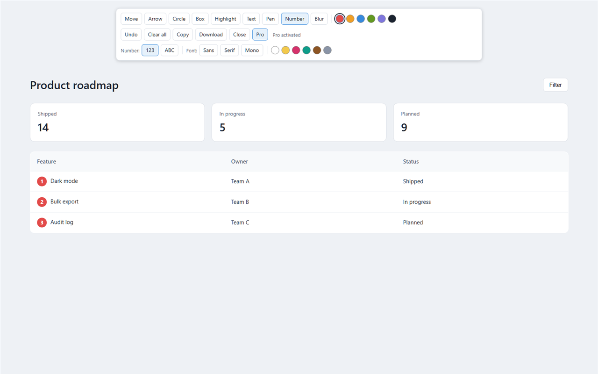

Arrows, circles, boxes, highlights, text and freehand pen, with move, recolor and undo.
Capture
Copy the screenshot to the clipboard, or download it as a PNG in one step.
Private
Screenshots are created and edited on your computer. They are never uploaded. No account.
Free and Pro
Free
Everything you need to mark up a page
Arrows, circles, boxes, highlights, text, pen
Move, recolor, delete, undo
Copy or download the screenshot
Six colors
Pro
For tutorials, bug reports and sensitive screens
Blur sensitive information before you share
Numbered or lettered steps (1, 2, 3 or A, B, C)
Serif and monospace fonts for text notes
Six extra colors
Save screenshots to a fixed folder

Pricing
Annotator is free to install from the Chrome Web Store.
Annotator Pro
15 USD one-time payment
No subscription. You pay once.
You receive a license key by email. Paste it in the extension to unlock Pro.
Activation needs an internet connection once. After that, Pro works offline on that computer.
14-day refund policy.
Purchase options will appear here when Pro is available for checkout.
How it works
Install Annotator from the Chrome Web Store.
Open any web page and press Ctrl+M, or click the Annotator icon.
Draw on the page, then click Copy or Download.
Español
Annotator te permite dibujar flechas, figuras, texto y pasos numerados sobre cualquier página web, y copiar o guardar la captura. Todo se queda en tu computadora. No necesitas cuenta.
Pro: pago único de 15 USD, sin suscripción. Difuminar datos, pasos con letras, tipos de letra adicionales, colores extra y carpeta fija para guardar capturas.